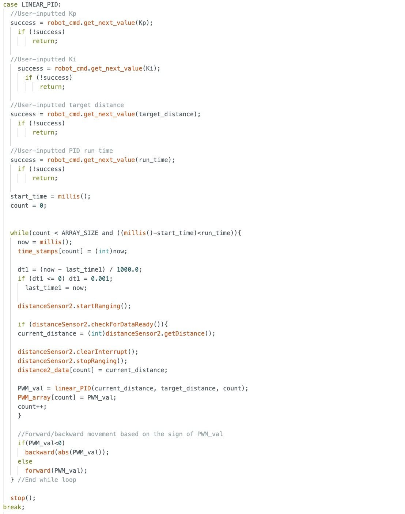

Lab 12: Path Planning and Execution
In this lab, our objective was to program the robot to follow a predefined path on the map, starting at coordinate (-4, -3) and ending at (0, 0), with stops and localization performed at each waypoint. Due to time constraints, we only collected localization data at the starred points and skipped the coordinate (5, -2) when traversing our path, as it lay directly between the straight path from (5, -3) to (5, 3). While we didn’t use localization to guide the robot’s movement, we used it to verify the accuracy of our belief estimates with Bayes.
Method
To execute the path shown above, we used open loop control for forward movement from coordinates (-4,-3) to (1,-1) and linear PI control for the rest of the path legs. We used orientation PI control for every turn. We used Arduino code from previous labs and called my commands sequentially from Python code to complete this lab. Our path execution method required only three Arduino commands: LINEAR_PID, FORWARD, and START_ORIENT_PID. (Note: I never implemented the D term so these commands should be named PI, but there are too many instances where these command names are used, so I never renamed them.) Although we collect data for localization using our LOCALIZATION command, we do not actually use it in our path execution.
Arduino Code
FORWARD Command
The FORWARD command accepts a PWM value and duration as user inputs and moves the robot forward accordingly for the specified time at the given speed. The forward() function comes from my Lab 4 code.

LINEAR_PID Command
The LINEAR_PID command takes in user inputs for Kp, Ki, the target distance (setpoint), and the run_time, then executes the linear PID control accordingly. The run_time variable determines how long the while loop continues to compute the PI output, and we adjust it based on what we consider appropriate for each leg. The linear_PID() function is reused from my Lab 5 code.

START_ORIENT_PID Command
The START_ORIENT_PID command is structured the same way as my LINEAR_PID command except we take a target angle as our setpoint. The orient_PID() function is reused from my Lab 6 code.

LOCALIZATION Command
The LOCALIZATION command was taken from my Lab 11 code. The robot rotates counterclockwise pausing every 20 degrees to collect a measurement.
Helper functions for LOCALIZATION


Python Code
Localization Observation Loop
Our observation loop function from Lab 11 was slightly adjusted since we’re using a combination of my code and Becky’s code, but it is essentially the same as before. We start our notification handler to collect angles and distances into an array, call the LOCALIZE command, and wait until all the data from the LOCALIZE command has been collected. We process and store this data into the arrays for the Bayes algorithm accordingly.

Update Step
We reused the update state for the Bayes algorithm that we had used in Lab 11 to obtain belief estimates for the three waypoints where we collected localization data.

Path Execution Code
This is our final path execution code, with detailed comments throughout. For each leg of the path, the robot moves forward using either open-loop control or PI control, then turns using PI control to align itself for the next segment. The localization code for the three waypoints we described earlier is also clearly integrated in this section.

Challenges
Initially, I planned to use my own robot, but I discovered that both of my time-of-flight sensors had stopped functioning—likely due to damage from the impact of my flip stunts. Code that had previously worked began returning either zero or erratic distance readings. The day after the ECE Robotics showcase, where I demonstrated the stunt, the serial monitor reported connection issues with both sensors. With limited time to desolder old connections and solder new connections, I decided to partner with Becky.
One challenge we faced was maintaining consistent and precise robot movements. Even when using PID control, the robot’s behavior varied with each run of the same code. This inconsistency may have been caused by factors such as battery drain over time and disturbances from people walking in and out of the mapped area, which could affect the linear PID. In earlier tests, the robot successfully reached the origin using PID. However, in our most visually successful run without human interference (shown below), the robot failed to turn sufficiently to detect the small wall. As a result, it overshot the origin, using the farther wall as the distance reference for PID instead.
Path Execution
Notes and References
I partnered with Becky and discussed ideas on a high level with Akshati. We did not use outside references.